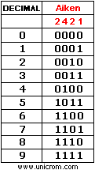
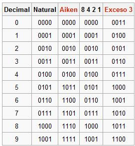

El código binario es un método de representación de números a la base 2, en el que cada lugar de un número corresponde a una potencia de 2. El código binario usa sólo los dígitos 1 y 0 (conocidos como dígitos binarios, o "bits") y combina esos dígitos para producir diferentes números binarios Casi todas las computadoras usan el código binario porque es fácil de implementar usando la electrónica digital y el álgebra Booleana, en las que las variables sólo tienen los valores 1 y 0.
Código binario natural
Consiste en representar directamente el número decimal en binario, o lo que es lo mismo cada número decimal tiene su correspondiente en binario.
Códigos BCD (Decimal codificado en binario).
Con estos códigos, para representar un número decimal en binario, se transforman cada una de las cifras que constituyen el número decimal separadamente, en el caso anterior el número 35, transformado en binario sería el resultado de transformar primero 3, y después 5.
Código BCD natural (8421)
Es un código con peso o ponderado, es decir el número decimal equivalente es el resultado de sumar el valor de la posición de los dígitos binarios que constituyen el código. En este código los pesos de los dígitos son las potencias sucesivas de dos, es decir 23 (8), 22 (4), 21 (2) y 20 (1), como se puede observar de ahí viene el nombre del código. Es decir se transcriben las cifras decimales a binario y viceversa, según la posición que ocupan. Ejemplo 35 = 0011 0111. Es decir 3 (0011) y 5 (0101).
Código Aiken (2421)Código exceso tres paridad impar.
También es un código ponderado, aunque ahora los pesos de las cifras según su posición serán: 2, 4, 2 y 1. Ejemplo 35 = 0011 1011. Es decir 3 (0011) y 5 (1011).

Código exceso tres
Éste es un código no ponderado, para obtener la relación entre el código decimal y este binario, se suma a cada dígito tres y después se convierte el resultado obtenido en binario 8421. Ejemplo 35 = 0110 1000. Es decir 3 (0110) y 5 (1000).
Código exceso tres paridad impar
En ocasiones se utilizan códigos que son especialmente útiles para algún cometido concreto, esto sucede con el código que vamos a analizar, se emplea para detectar si ha habido algún error en la transmisión de los datos codificados, de modo que emplea cinco dígitos en lugar de cuatro, pero de ellos el primero es un bit de paridad, para obligar a que cada grupo de cinco bits tenga un número impar de unos; si esto es así, es porque el dato transmitido es correcto, y entonces se procesa la información transmitida que es la que resulta de decodificar los cuatro últimos bits. Ejemplo 35 =1 0110 0 1000. Es decir 3 (1 0110) y 5 (0 1000).
A continuación se expresan las equivalencias de dichos codigos:

Autocomplementariedad
Se dice que un código binario es autocomplementario cuando el complemento a 9 del equivalente decimal de cualquier combinación del código puede hallarse invirtiendo los valores de cada uno de los bits (operación lógica unaria de negación) y el resultado sigue siendo una combinación válida en ese código. Esta característica se observa en algunos códigos BCD, como el código Aiken o el código BCD exceso 3. Los códigos autocomplementarios facilitan las operaciones aritméticas.
En un código binario de ancho fijo, cada letra, dígito, u otros símbolos, están representados por una cadena de bits de la misma longitud, como un número binario que, por lo general, aparece en las tablas en notación octal, decimal o hexadecimal.